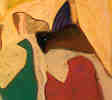

![[Art on the Net]](/images/artnet_button.gif)
![[Gallery]](/images/gallery_button.gif)
![[Studios]](/images/studios_button.gif)
![[What's New]](/images/whats_new_button.gif)
After leaving Jerusalem, Sari Khoury moved to Ramallah with his family. It was there in that marvelous mountain village that the early most marvelous years of youthful consciousness took place. Sari became aware of Palestine and its historic culture amids the great social tradgedies imposed by Israel. He wrote to me:

"The dispassion of a homeland took its toll on our entire family. As an impressionable child I witnessed all kinds of upheavals and painful situations and learned to internalize the agony of our impoverished status. My therapy from all this was in drawing. I drew figures, and tormented faces, old wrinkled people. From an early age, I rejected bourgeois values, pretty objects of art, and political deception. Even then, I knew that to pursue art would be a lonely voyage. My quest was to meet the challenges I had to face. I was then starting from square one as all the Palestinian people had to do. I had to deal with the distorted images of my culture, and attempted to defend my identity to my Western friends who were duped by the media. I had to rise above that humiliation.
My early encounter with painting was in watching my older sisters create in watercolors and color pencils. It was a tradition among school girls to exchange autographs with each other and to fill them with drawings and poems. Those little images appealed to me. I also took interest in comic books. To me, they exemplified a sense of justice as in the old American Westerns where the bad guys always got put away. The Israelis who took our homeland, to me, were the bad guys, and would eventually be put away. So I created my own comics dealing with themes of justice.
I also spent countless hours at the American Council library looking at works of art of the masters. My youthful associations included a friendship with the artist Kamal Bullata. He and I met at the Orthodox club in Jerusalem in the mid fifties where we exhibited at the annual juried exhibitions. That was an extremely nourishing friendship that included various discourses on art that helped crystallize my sense of esthetics.
Social realism was the style that appealed mostly to young Palestinian artists then. I experimented with it for a while, but felt then, as I do now, that as a style, it was a dead end. Even though it had it's place in an oppressed society.
Nationalistic and cultural influences are, for the most part, intrinsic to everything we do. In art, symbols, images and historical precedents always make themselves apparent unconsciously. So there is no reason to force feed those issues into one's art."
Copyright, Samia A. Halaby, 1999, All rights reserved. To request permission to reproduce any part of these pages send email to samia@interport.net
Select from the following menu representing the entire studio: